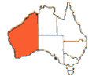
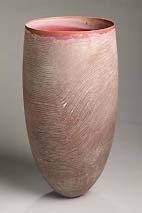
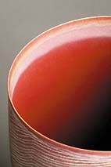
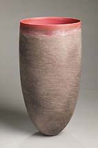
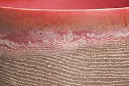

| The Australian Desert
Pippin Drysdale: Resonance. Article by Ted Snell


One of Pippin Drysdale’s
‘Boab’ pots sits on my desk at home, the delicate tracery
barely able to contain its swelling form. Each morning I look deep
into the maroon void of it’s interior and activate its bell-like
tone by tapping the top rim. As I work I look over at its elegant
poise as it hovers like a dancer and follow the seismic ripples
that run over the surface. It is both a meditative and a perplexing
experience.
Confronting Pippin Drysdale’s pots is fraught with difficulty.
Should you keep your distance and take in the relationships of the
various forms, should you move closer in to examine the intricate
tracery of lines or is it permissible to loose yourself in those
wonderful voids that lure you over their fine rim into a world of
intense colour? There is also the desire to touch and know the form
more intimately measured against their delicate balancing act and
the thought they might topple over. Somewhere between these polarities
of seduction and restraint we find our point of contact.
For
the past quarter century Drysdale has been refining her forms, her
materials and her language to create a unique body of work that
is responsive to the landscapes of Australia. Although an urban
artist she seeks out places that have a special character or resonance,
like the Tanami Desert in central northern Western Australia or
the Kimberley Region in the northwest of the State. Once absorbed
the colours, sounds, patterns and ambience of the site are carried
back to the studio where she patiently re-creates their ‘hum’
and ‘echo’ in the delicate web of glazes etched into
the surfaces of her elegantly shaped forms - lines of sight, of
smell, taste and memory.
Although these lines and forms seem arbitrary and abstract there
is a remarkable similarity between the rows of dunes blown into
long striations by the wind or the stratified rocks laid down over
millennia. Back in the studio the thin lines, sometimes anxious,
often flowing, occasionally broken, wrap around, enveloping and
defining the simplified ceramic form developed in collaboration
with her throwing partner Warrick Palmateer. They are vessels refined
to a truncated pod-like form balancing on a small base with lightness
and poise. The shape is a carefully wrought synthesis, the result
of many hours of deliberation in the studio informed by her empathy
with the landscape, that carries information about many aspects
of the landscape.
Working from her studio in the port city of Fremantle, surrounded
by the catalogue of her trials and failures, racks of wonderful
pots of all colours and sizes that failed her exhausting test of
quality, she summons up the character of those magical places in
these beautiful forms. Firstly choosing the shapes thrown by Palmateer,
then adding the layers of glaze and carefully cutting away with
a scalpel through a masking resist to inscribe the tracery that
defines and shapes each work. None is similar, each has its own
temperament and each speaks with a characteristic cadence and intonation.
Some
works set up a dialogue with the desert, others with native flora,
still others with the dramatic gorges and chasms that lance down
into the earth. They both describe and evoke in a play between representation
and abstraction that is never fully resolved, remaining a fluid
choice for each new player drawn into their orbit.
For these viewers another dialogue develops, this one interspersed
with silences, creating a space for contemplation and meditation.
It is the silence of awe and also of recognition that there is something
extraordinary, literally breath taking in front of you, something
that needs time before you can fully register its subtlety. This
dance with the works takes some time, it is different for each viewer,
but then the moment of balance occurs and secrets are revealed.
‘There are so many subtleties to that womb-like interior,
to getting it right and to maintaining that sense of containment
and tension’ Pippin Drysdale, ‘A Commitment to Clay’
2003
One of the marvellous secrets in each work is the hollow void saturated
in colour that provides an inner radiance, both mesmerising and
seductive. In the Boab series that orange glow is so intense it
seems to create another light source with the room. In contrast
to the mesh of white lines cut into the black skin of the pot it
looks ready to detonate, its containment only temporary, the form
just strong enough to hold it in, the four forms together looking
like reactors whose core might soon explode. The swirling interplay
of surface decoration and shape heightening the sense of imminent
melt down, the moire patterns of shifting lines making it difficult
to fix the image of the group.
Although her individual vessels when shown together suggest relationships
this grouping of forms is relatively new, the close proximity of
each setting up new tensions, suggesting new dynamics that give
the Boab series an extra charge.
The
Boab Adansonia gregorii, indigenous to the Kimberley region of North
Western Australia, is a large spreading tree with branches that
radiate from the top of the swollen barrel trunk that soaks up and
holds water. The tree is a source of nourishment and sustenance
in a harsh environment, also providing food in large woody capsule-like
nuts. In Drysdale’s pots the promise within is evoked by the
rich orange interiors while the etched surfaces echo the tradition
of Indigenous Australians who decorated the nuts and used them as
items of exchange. There is also the resonance of the name captured
in the relationship of the forms like a hollow play between two
drums and so much more.
Similarly in Spinifex she evokes the colour and soft, blurred forms
of the desert grass found in the sandy soil of Central Australia.
Growing in a ball shape, its sharp and thin leaves sprouting outwards,
the plants when dislodges roll over the landscape propelled by the
wind. Something of that erratic tumbling is captured in the lines
Drysdale maps around the vessel while the soft grey green colour
shifts and blushes in sections just as the rolling balls of grass
allow the red earth to bleed through as they move relentlessly across
the landscape.
The northwest of Western Australia is a remarkable environment
it’s harsh and cruel terrain occasionally providing respite
in a gorge or fissure in its dry surface where water collects or
bubbles up. In these oases the water is clear and fresh, flowing
out and over rocks of the richest red ochre, creating a stinging
contrast of colour so intense it is quite literally shocking. In
Chasm- MacDonnell Ranges the flow of blue lines around the red form
mimics that contrast while the unfathomable void of the blue recreates
the depth and intensity of the water pools, so welcome after hours
of travel across dry terrain.
One of the most dramatic features of that northwest Kimberley
landscape is the Bungle Bungle Ranges, an extraordinary grouping
of ochre and black striped mounds, encased in a skin of silica and
algae, that rise up to 600 metres about sea level and spread over
the land for kilometers. They are like a huge series of Drysdale’s
pots, upended and dispersing toward the horizon. Her own Bungle
Bungle 1 Kununarra vessel encapsulates that sense of inevitable
and unstoppable replication, moving out in waves, her stripes both
defining the looping hills and rolling in and through them.
Pippin
Drysdale’s latest body of work continues her journey through
the landscapes of Western Australia. The seven ‘Earth Drawing’
pots on show at CO[
]ECT 2005 at the V&A in London explore the visual traces
of the wind, of the processes of sedimentary deposit, of weathering
and erosion. In ‘Earth Drawing 04’ the subtle bleed
of the lines echoes the leaching of salt while the soft pulse of
colour around the form contrasts with the dramatic reverberation
of the extraordinary pink interior that glows like a James Turrell
installation. You can almost hear the wind whistling across the
surface of the land and smell the astringent aroma of saltbush.
Each vessel takes as its inspiration a site, a place, or a visual
experience and documents a deeply felt resonance with the land.
Through her articulate language of line and colour she delineates
each form and saturates each sonorous interior to offer us new insights
about the environment and open up a space for this dialogue with
the landscape to unfold.
Article and images courtesy Pippin Drysdale, http://www.pippindrysdale.com.
© Ted Snell is
Professor of Contemporary Art, and Dean of Art at the John Curtin
Gallery, Curtin University of Technology. He is currently art reviewer
for The Australian in Western Australia and a regular contributor
to ABC radio and to several national journals. He is also the author
of several books on Australian art and curator of numerous exhibitions.
More Articles
|
{kind=link}
{kind=link}
{kind=link}
{kind=link}